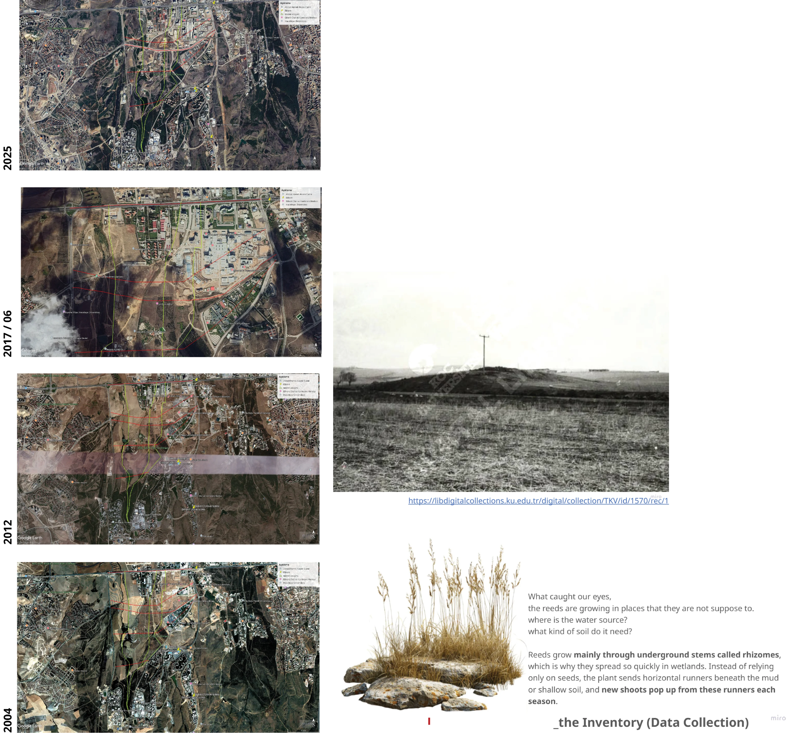

soil metabolism is the center of investigation.
By metabolism, the project proposes something very specific:
Soil does not simply remain in place.
It is excavated.
It is transported.
It is redistributed.
It interacts with water.
It enables new forms of vegetation.
Within this framework, we examined the Bilkent territory through three different contexts.
The first context is what we call the sterilized. This refers to Bilkent City Hospital and its immediate surroundings. It is a highly controlled, concrete and organized environment.
The second context is the refurbished, which particularly refers to Beytepe Pond and unfinished surrounding areas. Here is a designed landscape. Species are selected, labeled, and intentionally organized. However, within a dispersion from this environment, we observed unexpected growth patterns and discontinuities that appear to emerge alongside displaced soil such as reeds, land snails, and dead nettle.
The third context is the incomplete: The arboretum and the Botanical Park surroundings.
Here we observed uncontrolled growth, reed formations, spontaneous vegetation, and unexpected encounters between steppe ecologies and transported landscape. This became a particularly critical site for us.
In an area expected to exhibit steppe characteristics, the appearance of reeds led us to ask: Are fertile relations already embedded within displaced soils becoming activated once again through the water line?
This led us to formulate our research question:
In the cases of Beytepe Pond, Bilkent City Hospital, and the arboretum, do emergent plant formations indicate the erasure of the steppe, or do they reveal soil's capacity to retain, reactivate, and rearticulate its own ecological archive in a new location?

This research adopts a multi-scalar and interpretive methodology to investigate the mobility of urban soil and its ecological consequences in Ankara. This is achieved through the examination of Bilkent area in 3 contexts in terms of movement's consequences: sterilized, incomplete and refurbished. Hospital and its surroundings, the Beytepe Pond and the arboretum (Botanical Park's incomplete parts) are approached as a critical site where these dynamics become materially observable. Rather than treating soil as a fixed and stable ground, the study approaches it as a dynamic, circulating, and metabolically active medium. To capture this condition, the methodology combines spatial mapping, field observation, territorial relationality, experimental ortographic projections, field observation, and critical material interpretation through plant species analysis.
At the core of the study is the tracing of soil movement generated through large-scale excavation practices, particularly those associated with the construction of Bilkent City Hospital. This is achieved through spatial mapping techniques and site analysis that identify the points of extraction, transportation, and deposition of soil. Temporal analysis, supported by satellite imagery and planning documents, is used to understand how these movements unfold over time and how they correlate with changes in land use and ecological conditions. Field observations conducted in and around Beytepe Pond provide a situated understanding of these processes.
These observations are not treated as isolated data points, but as indicators of broader material and ecological transformations. The botanical park intro building and half-finished entry are targeted to observe the uncompleted construction and vegetation processes resulted in wilderness, remaining in the center of a designed area. This part reflects on the ever-changing status of the existing ecological particles and bare refurbishment with material flows, ecological continuity, and soil movement.
The methodology also incorporates a material reading of soil as a stratified and relational entity. By examining the physical characteristics and concealing water features within the ground, the study interprets soil as both a carrier of past conditions and a medium through which new ecological assemblages emerge. This approach is complemented by critical reading of planning documents, archival research, aerial photographs and site visits which reveal how soil is differently framed across institutional and ecological discourse. Importantly, this research does not seek to establish linear causality between soil movement and ecological change. Instead, it employs an interpretive and relational approach that connects between excavation, hydrological systems, and emergent vegetation. Through this framework, soil is understood not only as material, but also as archive-retaining, transporting, and rearticulating ecological traces across urban space.